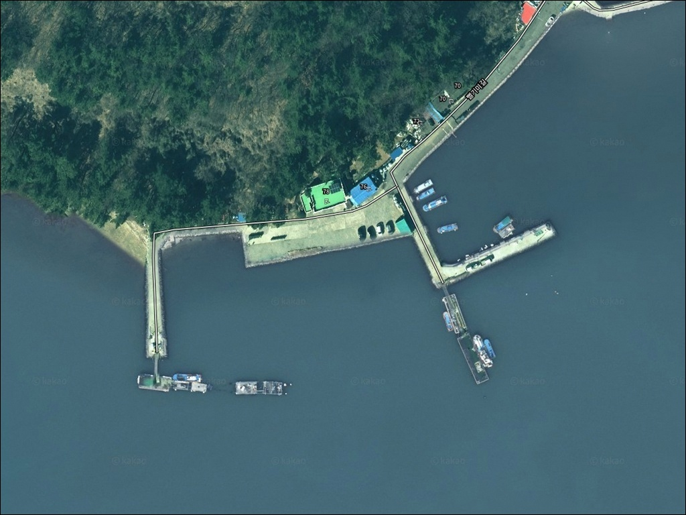
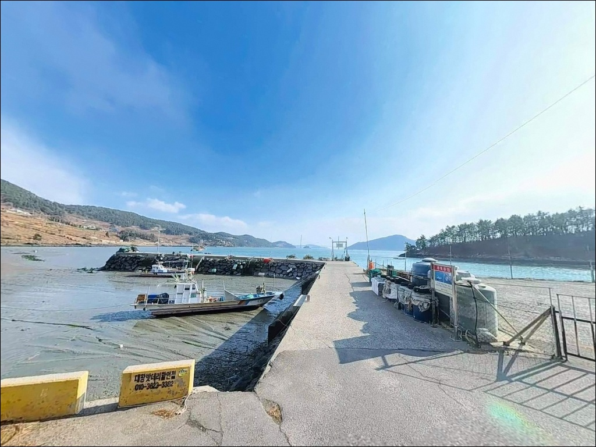
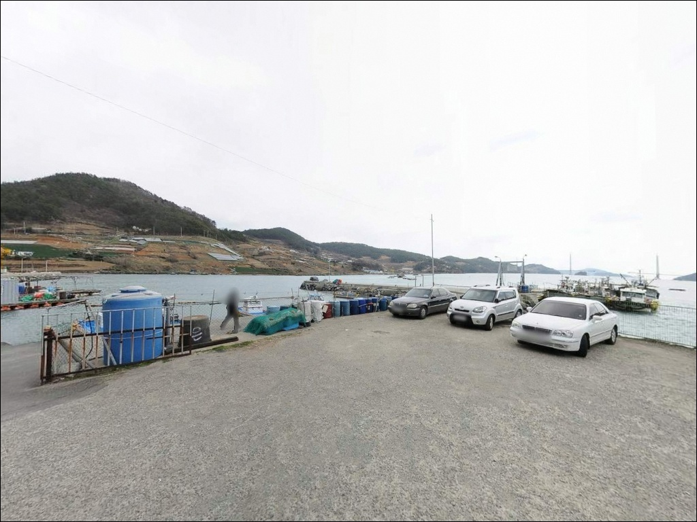
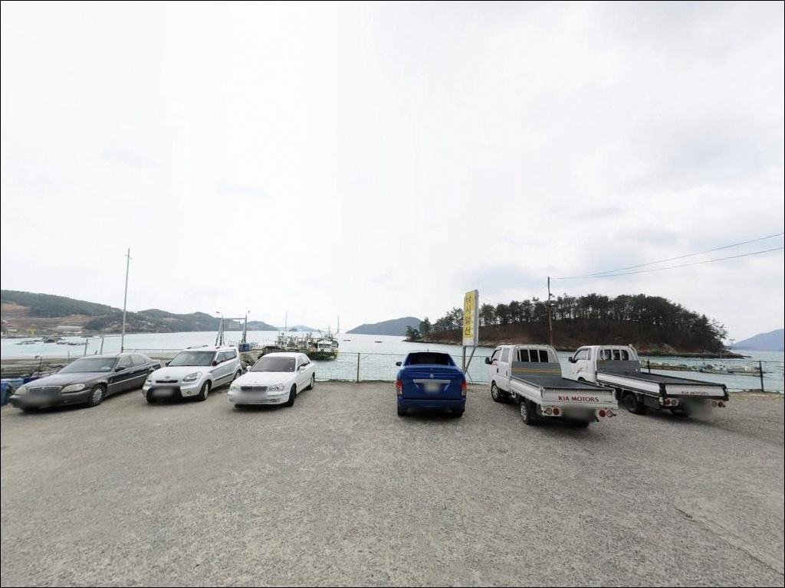
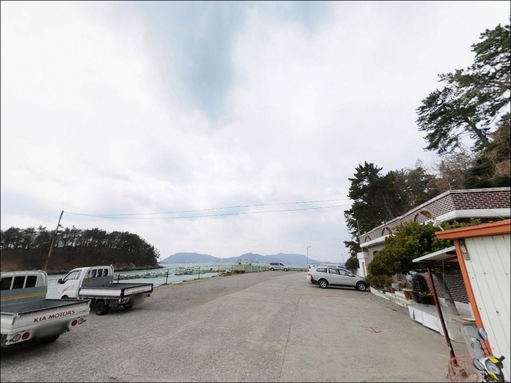
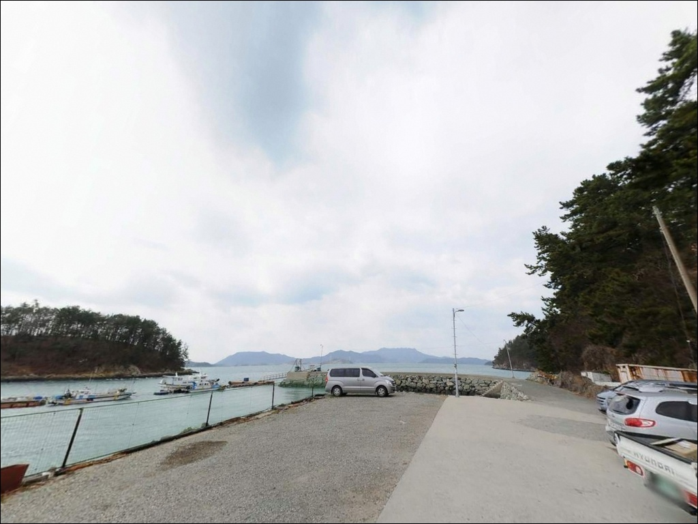
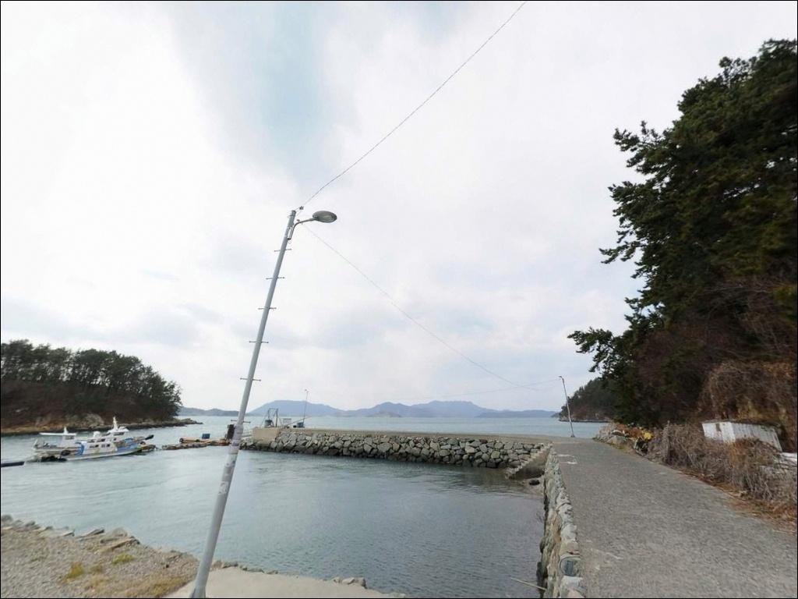
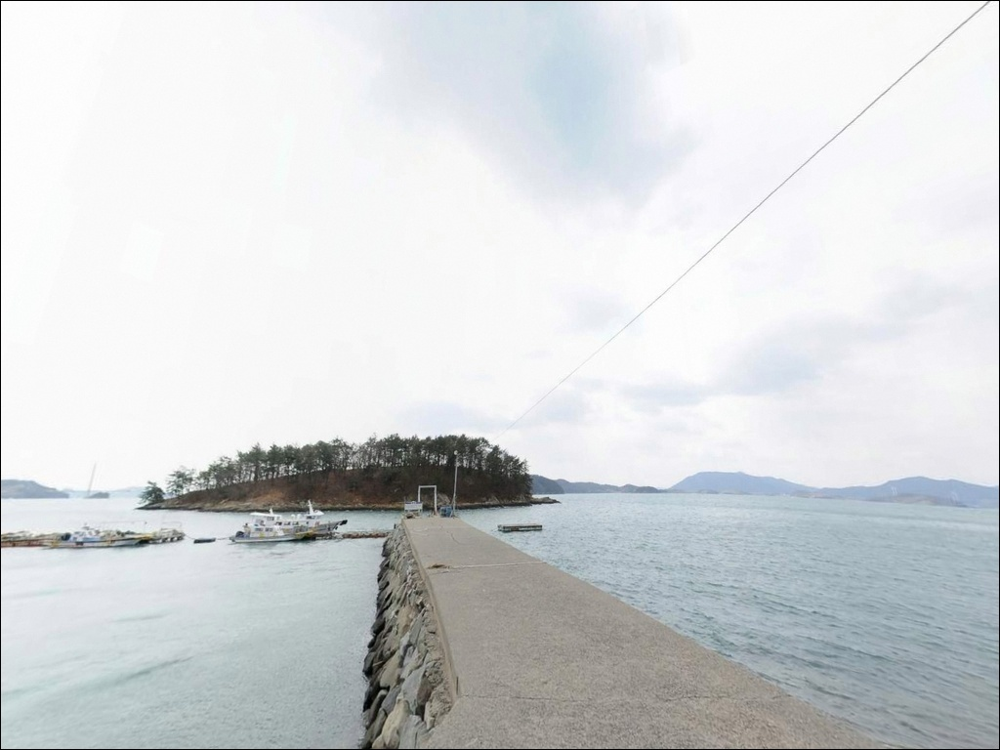
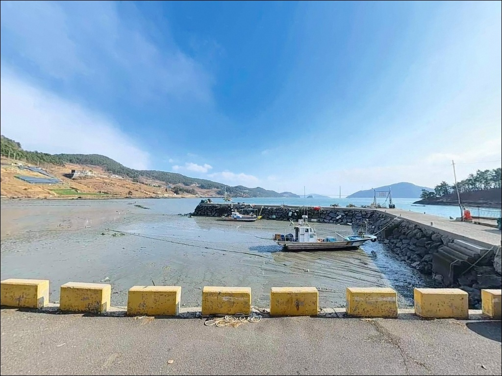

여수 이목항 방파제, 대조차 3m 간조 피하고 만조 전후 끝단 외항 공략
이 페이지에는 광고(제휴 링크 포함)가 있으며, 광고 링크를 통해 구매하면 운영자가 판매 수익 또는 수수료를 받을 수 있습니다. 포인트 사진: 카카오맵 스카이뷰·로드뷰. 이 페이지의 지도·사진 이미지는 카카오맵의 실제 서비스 이미지와 다를 수 있습니다.


포인트 안내
이목항
전남 여수시 화양면 이목리 1651-3
방파제 안쪽과 바깥쪽을 구분하지 않고
자리를 잡으면
조류가 제대로 닿지 않는 구간에서
채비만 내리고 앉아 있게 됩니다.
이목항은 293m 방파제가 외해를 막아주는 구조로,
내항과 외항의 조류·수심 조건이 뚜렷하게 다른 포인트입니다.
전남 여수시 화양면 이목리,
가막만 서측 연안 고돌산반도 동쪽 해안에
자리한 이목항은 2007년 어촌정주어항으로 지정된
공식 등록 시설입니다.
가막만은 남북 15km, 동서 9km 규모의
타원형 내만으로,
이목항이 위치한 서측 연안은
파도 영향이 적고 조류 소통이 꾸준한
안정적인 낚시 환경을 갖추고 있습니다.
이 글은
이목항의 방파제 구조와 진입 환경,
낚시 방식별 공략 조건,
차박 체류 여건에 집중합니다.
조황 단정이나 특정 어종 보장은
이 글의 범위에 포함되지 않습니다.

1. 진입 동선과 차량 접근 여건
이목항은 국도 77호선(백야선)에서 분기하는
화서로를 따라 진입합니다.
화양면 소재지 나진리 방향에서
이목리 해안으로 내려오는 구간은
왕복 2차선 포장도로가 확보되어 있어
SUV나 중형 캠핑카 기준 진입에 무리가 없습니다.
항 인근 마지막 구간은
1차선 수준의 해안 마을 도로로 좁아집니다.
대형 캠핑 트레일러나 5톤 이상 차량이라면
출발 전에 위성지도로 마지막 진입 구간을
확인하는 편이 안전합니다.
방파제 기부 인근은 선박 작업 공간과
주차 공간이 혼재하는 소형 어항 특유의 구조입니다.
회차는 항 입구 도로변과 선착장 전면 평지에서
가능하며,
어민 차량 동선을 막지 않는 자리가 우선입니다.
물량장 인근 콘크리트 포장 공터와
방파제 진입부 전방 평탄 구간이
주차 후보로 활용됩니다.

2. 차박 환경과 야간 체류 여건
이목항 일대 이목리 해안에는
펜션과 민가가 산재해 있습니다.
야간에도 마을 가로등과
숙박시설 외부 조명이 일부 남아
완전 암흑 환경은 아닙니다.
야간 차량 통행은 어민 차량 위주로
드나드는 수준이라 조용한 편입니다.
가막만 내만 구조상 파도 소음이 적고
바람 직격 노출도 제한적입니다.
낚시를 마치고 조용히 하룻밤 머무는 용도로는
나쁘지 않은 환경이지만,
항 주변 물량장은 이른 아침
어선 출항 동선이 지나는 공간입니다.
주차 위치를 어업 활동 동선에서 벗어나게
잡는 것이 차박의 기본 전제입니다.
가막만은 환경보전해역으로 지정된 수역입니다.
취사나 오염물질 투기는 허용되지 않으며,
민가와 인접한 만큼
야간 소음 관리가 차박 매너의
기본 조건이 됩니다.


3. 주변 편의시설 및 인프라 현황
이목항 반경 3km 이내에는
독립 편의점이나 대형 마트가 없습니다.
식수, 얼음, 낚시 소품, 연료는
출발 전 모두 갖추고 가는 것이
현실적인 준비 방식입니다.
화양면 소재지 나진리까지는
차량으로 약 10분 거리입니다.
화양농협, 우체국 등 기본 공공기관이
나진리에 위치하며,
식사나 생필품 조달이 필요하다면
이 동선을 활용하는 것이 가장 현실적입니다.
응급 상황 발생 시
여수 시내 병원까지는 차량 30~40분 거리입니다.
비상 약품과 수분은
출발 전에 충분히 준비해 두는 것이 기본입니다.

4. 방문 전 조건 점검과 준비 기준
이목항 방문 전 가장 먼저 확인할 것은
물때입니다.
바다타임(Badatime)에서
이목항 기준 별도 물때 정보를 제공하고 있어
정확한 확인이 가능합니다.
방파제 끝단 외항 쪽은 조류가 살아 있는 구간으로,
정조 전후 타이밍이 원투와 루어 모두에서
조과 차이를 만드는 구간입니다.
가막만은 대조차가 약 3m 수준입니다.
간조 시에는 연안 수심이 낮아지는 구간이 생기므로
만조 전후를 기준으로
방파제 끝단과 외항 방향을 공략하는 것이
기본 전략입니다.
기상청 해상예보는
당일 아침 다시 한번 확인하는 편이 좋습니다.
어촌정주어항으로 어선 출항이 이루어지는 공간입니다.
선박 작업 동선을 방해하지 않도록
자리를 잡고,
야간에는 구명조끼와 헤드랜턴을
반드시 갖춰야 합니다.
채비는 암초와 양식장 시설 걸림에 대비해
여분을 넉넉히 준비합니다.

5. 방파제 구조에서 읽히는 낚시 여건
이목항의 방파제 길이는 약 293m입니다.
방파제가 외해 방향을 막아주는 구조로
내항은 항상 잔잔하고,
외항 쪽은 가막만 수로에서 흘러오는
조류가 꾸준히 닿는 구간입니다.
방파제 중·끝 지점 기준으로
수심이 비교적 빠르게 깊어지는 구조입니다.
가막만 서측 연안 바닥은
사질·뻘 혼합 성질로 구성됩니다.
방파제 끝단 외항 방향은
조류 흐름이 어종을 모이게 하는 길목 구간으로,
바닥 걸림이 심하지 않은 편이어서
원투 채비가 비교적 안정적으로 운용되는 조건입니다.
내항 물량장 주변은 잔잔한 수면 조건을 원하는
찌낚시에 어울리는 구간입니다.
이목항이 위치한 가막만 해역은
농어, 문어, 볼락, 감성돔, 도다리, 숭어,
갑오징어 등이 서식하는 해역입니다.
어촌정주어항 공식 자료에는
농어와 문어가 이 항에서
어획되는 주요 어종으로 기재되어 있습니다.
출조 전에 최신 조황은 꼭 검색해 보시기 바랍니다.


6. 이목항 지형에 어울리는 낚시 방식
방파제 끝단 외항 방향에서 가장 잘 맞는 방식은
원투낚시입니다.
사질·뻘 혼합 바닥과 조류 흐름이
바닥성 어종을 끌어들이는 조건을 갖추고 있으며,
도다리, 숭어, 농어를 기대해볼 수 있는
구조입니다.
조류가 살아 있는 만조 전후 타이밍에
채비를 외항 방향으로 멀리 보내는 방식이 유효합니다.
에깅도 이 포인트에서 운용해볼 만한 방식입니다.
가막만 해역은 가을 시즌
갑오징어 에깅 조황이 형성되는 해역으로,
방파제 끝단 외항 쪽에서
에기를 멀리 보낸 뒤 천천히 끌어오는 방식이
이 지형 조건에 잘 맞습니다.
주꾸미 시즌에는 병행 공략도 가능합니다.
볼락 라이트게임은 야간 시간대에 적합합니다.
방파제 끝단 테트라포드 주변과
석축 경계 구간에서
소형 지그헤드 채비를 활용하는 방식이
이 포인트 구조에 어울립니다.
가을 이후 수온이 내려오는 시기부터
씨알이 올라오는 편입니다.
내항 물량장 주변에서는
찌낚시가 안정적으로 운용됩니다.
잔잔한 수면 조건이 유지되어
감성돔이나 소형 어종을 노리기에
적합한 환경입니다.
민장대를 이용한 발밑 공략도
이 구간에서 선택 가능한 방식입니다.

7. 대안 포인트와 플랜 B 동선
이목항이 주차 여건이 여의치 않거나
어업 활동 간섭이 클 경우,
동일 이목리 내에 위치한
가정항이 첫 번째 대안입니다.
이목항에서 1~2km 거리로
방파제 길이가 180m인 어촌정주어항이며,
같은 가막만 서측 연안 조건을 공유합니다.
가정항보다 더 규모가 큰 포인트를 찾는다면
화양면 나진리 방향으로 약 6~7km 이동하면
나진리 해안 일대에 닿습니다.
같은 가막만 서측 해역 조건이 유지되며,
면소재지 나진리를 기점으로 잡으면
편의시설과 낚시를 함께 해결하는
동선이 만들어집니다.
여수 시내 방면이나 돌산도 방향으로
이동하면 규모가 큰 방파제와 항만이
다수 있습니다.
기상·풍향에 따라
풍향 반대편 방파제로 이동하는 방식의
플랜B 구성이 가능한 권역입니다.

방파제 외항 조류를 읽을 수 있다면
이목항은 충분히 기대해볼 만한 포인트입니다
원투낚시나 에깅을 즐기는 낚시인이라면
이목항의 방파제 구조는
잘 맞는 조건입니다.
293m 방파제가 만들어내는
내항과 외항의 명확한 구분,
가막만 해역 특유의 꾸준한 조류 흐름이
여러 낚시 방식을 병행할 수 있는
기반이 됩니다.
다만 반경 3km 이내 편의시설이 없는 환경이라
완전 자급 체제 없이 찾아가면
기본적인 부분에서 불편함을 겪을 수 있습니다.
물때 확인, 자급 준비, 진입 구간 사전 점검,
이 세 가지가 이목항 방문의
기본 판단 기준입니다.
가막만 내만의 조용한 야간 환경을 배경으로
방파제 끝단에 자리를 잡고
낚시와 차박을 함께 즐기려는 낚시인에게
이목항은 한 번쯤 탐색해볼 만한 포인트입니다.